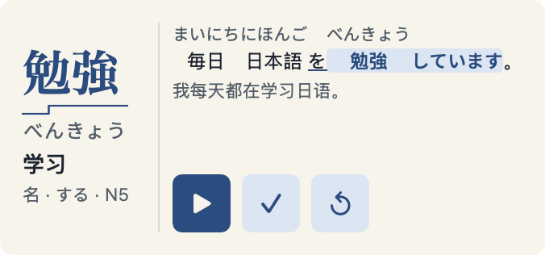

Kotoba Daily
Japanese · 日语 · iPhone / iPad / Mac / Apple Watch

Read kanji with furigana and see pitch-accent patterns when the word includes them. Examples highlight the target word. Selected Chinese-Japanese false friends have a note.
汉字配振假名，有声调数据的词显示声调线；例句突出目标词，部分中日同形异义词附有提示。
Free app with an optional one-time Pro purchase. 免费下载，可选一次性 Pro 内购。